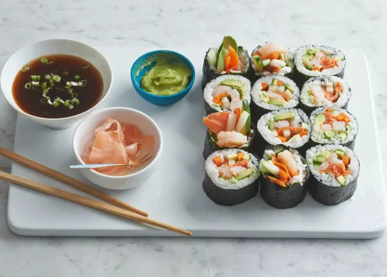

Homemade Sushi Rolls

Making sushi at home is surprisingly simple, and we will show you how to make sushi rolls.
With just enough practice, you will realize not only how easy sushi rolls are to make, but also how delicious they can be!
New to making sushi rolls? No problem! Here's what you'll need:
- A bamboo rolling mat, also known as a makitsu
- Plastic wrap
- A sharp knife
Ingredients for California Rolls:
- Rice
- Nori sheets
- Crab meat (or imitation)
- Avocado
- Cucumber
You can also mix the crab meat with a bit of mayo for a creamier texture. This is optional.
A quick note on the rice:
Make sure to wash your rice before you cook it. A perfect wash looks like this:
- Put your rice in to a sieve and put a bowl or a pot in a sink.
- Wash your rice over the pot and keep washing it until your rice is soaked.
- Empty out the pot that has all of your rice water in it.
- Keep doing this process until the water in the pot eventually becomes clear (and not cloudy).
How to make California Rolls:
- Place the bamboo mat on a cutting board so that the bamboo strips are horizontally to you.
- Spread a strip of plastic wrap over the bamboo mat, then place a sheet (or half sheet, if it's too big) of nori on the plastic wrap.
- Spread a thin layer of sushi rice over the nori.
- Add your ingredients toward the center of the rice-covered nori.
Make sure to not over-pack it.
- Lift the bottom of the mat up and over the sushi. (Don't rush it, take your time!)
Roll with pressure so you get a firm roll.
- Keep rolling until just about an inch of the nori shows at the top. Seal the edge of the nori with a little cold water.
- Slice the sushi roll in half on a cutting board. Afterwards, cut each half into thirds (This should give you 6 pieces of sushi).